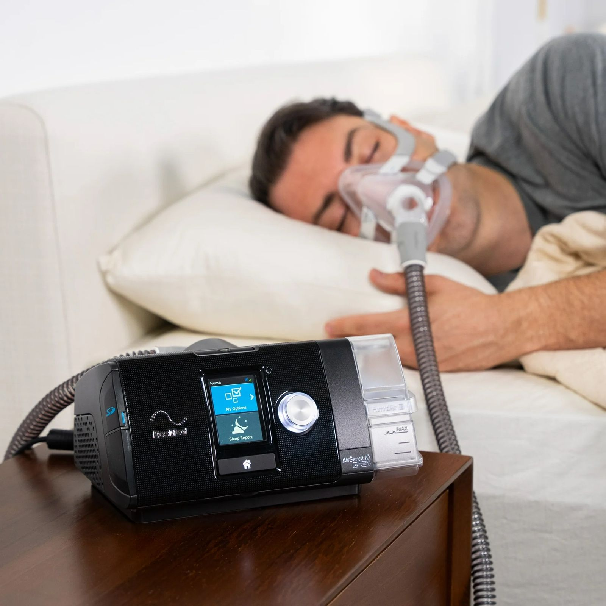
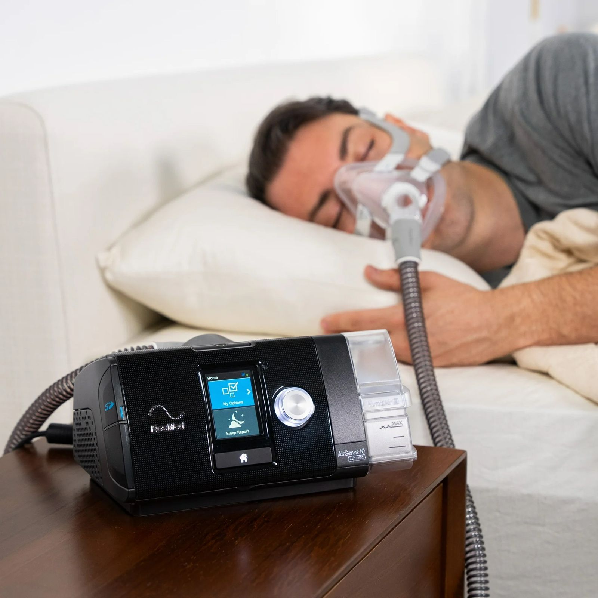

Estudio de Apnea del Sueño
El estudio de sueño es una prueba diagnóstica que permite detectar apnea del sueño y otros trastornos respiratorios del dormir, evaluando la respiración, oxigenación y patrones de descanso del paciente.
 

- Evaluación de apnea del sueño
- Medición de respiración y oxigenación nocturna
- Registro de eventos respiratorios durante el sueño
- Estudio no invasivo y seguro
- Interpretación por personal especializado
Indicado para:
Personas con ronquido frecuente, pausas respiratorias al dormir, somnolencia diurna, fatiga crónica, hipertensión o sospecha de apnea del sueño.